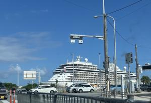

うるがいの話 ある日
最新: 家族葬【うるがいの話 ある日】とは 一日だけのプログです
『うるがいの話』の最新一日だけのプログで、通信料が少なく経済的だ。カニの画像をクリックすると全ての日付が載る『うるがいの話』サイトを表示します
|
|
【うるがいの話】 うるがい(ｳﾙｶﾞｲ urugai)とは、『もずくがに』の名前でとても大きくなります。 |
|---|---|
|
|
【カミマヤーの話】 猫のことを方言でマヤーといいます。カミマヤー（kamimayaa）とは、神の猫のことです。 |
|
【たながぁの音楽】 たながぁ（ﾀﾅｶﾞｰ tanagaa）とは手長えびのことで、何種類かあり大きいのは車 エビぐらいになります。 |

|
【ぶながぁの話】 ぶながぁ(ﾌﾞﾅｶﾞｰ bunagaa)とは、赤い髪の毛、赤い身体、そして身長は１ｍ２０ｃｍ ぐらい、川の蟹を食べているの目撃された。場所は沖縄県国頭郡大宜味村のと ある村僕の隣近所に住んでいる爺さんから、聞いた話です。 |
|
|
【ギーマの話】 ギーマ(giima)とは、山原の里山に咲くスズランに似た、 花を付けます。実は食べられます、 気が付くと口の周りが紫になっています。 |
2024年11月04日 (月）家族葬
15:15
１６時４８分、ヨメのスマホから救急車のサイレンの音が聞こえる。施
設からお義母さんを救急車で運びますとの連絡、急ぎで搬送先の県立病
院へ車で向かう。お義母さんの状態は？と聞くと、『心拍停止』と答え
る。搬送先で行くと、係の人が『１７時１７分にこちらに到着しました
が、心拍停止の状態です、延命措置をしないとのことなので、後は医者
の立ち合いの元、死亡診断をします』。受付で待っている間に、施設の
責任者とお義母さんを診ていた職員が、訪れ救急車を呼ぶまでの状況を
説明してくれた。１５時のおやつには元気で、夕食まえの１６時３０頃
みわまりをすると反応がないので救急車を呼んだ（後で心臓マッサージ
などをしたことを聞いた）ことを話てくれた。
そしてその後、係の人に案内されお義母さんと対面する。眠っているよ
うな顔をしている。二人とも涙も出ず、苦しまずに済んだかもとホッと
する。やがて、医者が来て立ち合いのもと死亡を判定する。ただし入院
患者でないため正式な診断は、警察で行うことになると説明される。
警察官が来るまで、あらかじめヨメが念頭にあった葬儀社と連絡をとる
。その時点で、数日先の火葬の日時を伝えられる（枠があるようだ）。
やがて、１９時ごろ、警察官二人（ひとりはナハマラソン３６回のシャ
ツを着ていた）が到着、事件性がないか２０分近いヒヤリングを受ける
。そして、遺体を警察所に運び、専属の医者が死亡診断をしますと伝え
られる。遺体を引き取るのは、連休でもあることから数日になるかもし
れないと言われた。警察官が、専用車でお義母さんの遺体を載せ、救急
から出るのを、救急の関係者と一緒に見送る。家に戻ったのは、２１時
前。
きのう、９時前に警察官から１０時３０分に署へ来てほしいと連絡が入
る。お！、ハヤ、少し早めの１０時１５分に署に着く、駐車場には昨日
の計画が、すでに立っている。挨拶をして、案内された場所へ車を停め
る。警察官は、別の事件の対応があるので他の係が変わりますといって
去っていった（非番と言っていたが）。すでに葬儀社は着いているとの
こと、黒い上着を着た女性が私達所へ向かってきたので、ヨメは葬儀社
の人と思って、昨日はどうも・・・、女性は警察官だった。
１０時４６分：警察署から会館への移動でみた客船

葬儀会館に着き、段取りなどを調整、家族葬で、新聞広告なし、葬儀の
日程などを調整する。病院の通院のとき、暇つぶしにお義母さんに昔の
写真をスマホで見せたとき、綺麗に撮れていると本人もイイネと言った
お儀母さん（２０１０年１１月の旅行へ行ったホテルの部屋でヨメが撮
った）葬式の写真（ＵＳＢで提供）や、仏壇の位牌をとるため一旦、家
に戻りまた、葬儀会館へ戻る。そして、個別に頼んだ業者のお義母さん
の化粧を済ませて家に戻ったは１６時。
本日のバタフライピーの花、２１収穫。
１５時０８分 ビットコインの総資産 ￥３０、３２４（↓５１）